A room already in motion
A visitor can meet the child at the opening, encounter it after separation, or arrive while someone is putting it back. Each entrance makes a different part of the work visible.
Enter the film mid-loop
Enter at 48 seconds. At 48.9 seconds green water appears between the hulls. Stay for 12 seconds and follow the larger body.
The exhibition edit gives the operator a place in the film. A ball emerges on a workbench. A hand moves across a phone. Later, the same question follows the visitor to the live tank: who else has to be here for this to happen?
Read the timed film text · Download exhibition edit · Download with permanent captions · Shots and source credits
Set up offline gallery playback
Copy the permanent-caption MP4 to the display computer. Set the local player to repeat one file. During opening checks, mute the output, watch the operator’s hand on the phone, then let the final digital image wrap to the opening. The shot labels and sound captions are part of the picture. The live tank can remain paused throughout this test. Post its operating status at the tank.
Stay after separation
Near the end of the first overhead recording, the smaller hull curves back across the far side of the tank. Its outline meets the carrier again. This 55-second playback trial holds the complete camera take between two passages from Water Beings. Try it on the film wall while the physical tank is paused.
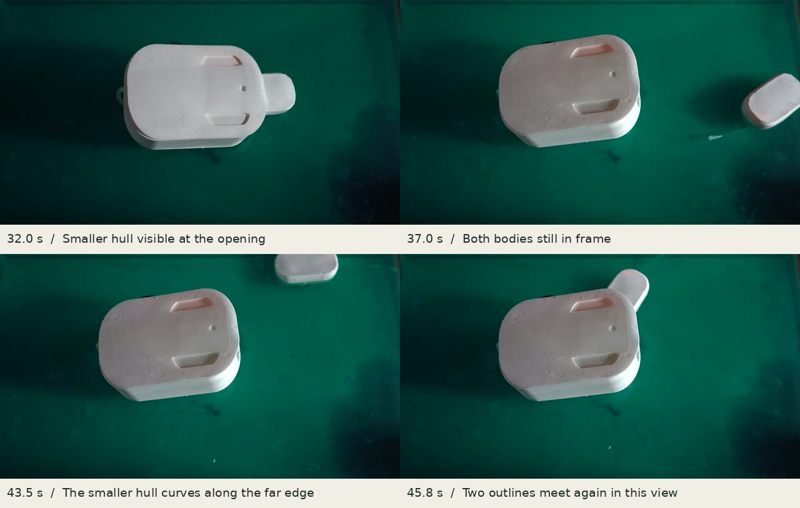
Open the exhibition player · Download the 1080p return study · Edit and rehearsal notes
Where a seated visitor can see

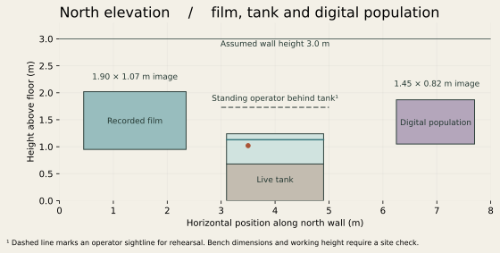
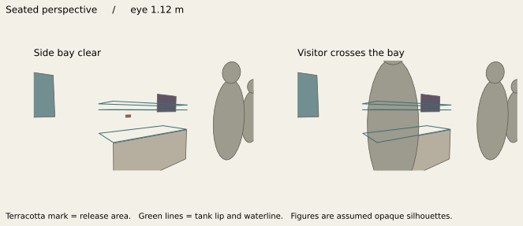
Look from the bay
The CAD shell is placed at project scale inside the proposed tank. The screens use frames from the artist’s recordings. These six earlier views test occupancy and competing images. They retain the first workbench position. The revised plan increases the working gap behind the tank.
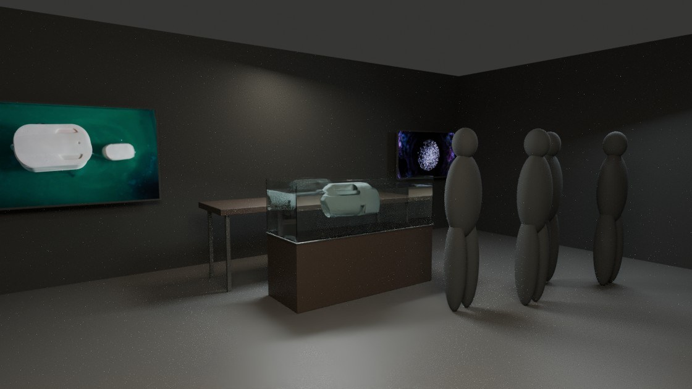
When someone steps in front
A visitor crosses the opening. From the same eye position, the model camera turns toward the film as the recorded child curves back. The digital population stays on the east wall. Download the silent 10-second rehearsal.
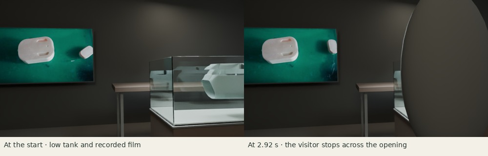
Keep the seated bay open during a live cycle. A recorded view gives someone a second way to follow the work, including during reset. In this layout, keeping both the whole screen and the physical opening comfortably visible needs a venue test. Read the timing and geometry.
Read the wall from the seat
At 49.5 seconds, the source label sits high on the left and the caption runs near the bottom of the film. At the proposed 1.90 m image width, the letters in “First” and “water” each span about 27 mm vertically. Take the two actual-size picture fragments to the venue. Tape them at their marked heights and try reading from the bay and the entrance, then repeat with the projector, the tank lights and the film muted.
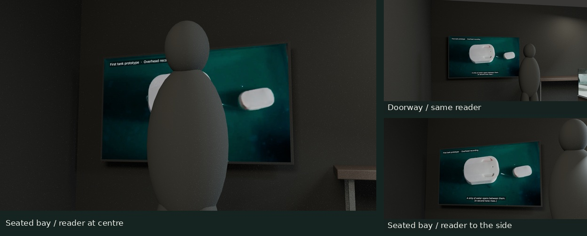
Print the A3 caption distance proof · See the sightline measurements
What each station can say
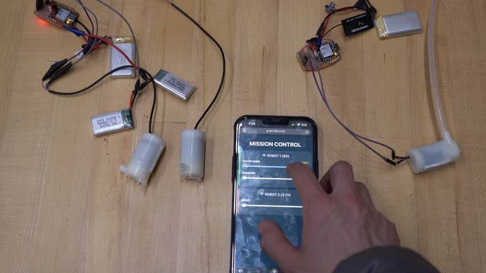
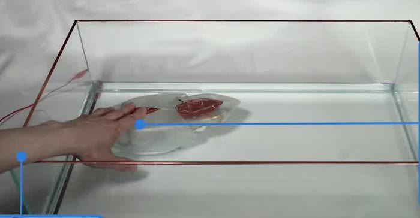
| Station | Proposed wall text |
|---|---|
| Physical tank | “A separately made offspring is loaded into the carrier. In the early tank test the operator used a phone to start the pump. The release changes the positions of both bodies. A member of the installation team prepares the next cycle.” Use only with the early prototype and a confirmed operating protocol. |
| Touch-assisted version | “In this later prototype, touching the mother changes the pump drive.” The artist documents capacitive contact at 00:44 in the project film. Confirm the installed version at commissioning. Visitors can follow the entire recorded release from the lateral bay. |
| Film | “Recorded views of two different prototypes. A low tone follows the angle of the carrier. A higher one follows the gap between the bodies.” Keep this label readable when the room is silent or the tank is paused. |
| Digital population | “In Water Beings, contact produces the next generation. After seven generations the colour cycle begins again. What remains from earlier lives changes the space available to later ones.” Use when showing Water Beings itself. The digital population of Born, Not Made has its own rules. |
| Reset | “Live tank paused. The film is a recording. The next live cycle begins when the operator has reset and checked the apparatus.” Leave space for the actual pause and restart times. |
Who tells the room the tank is paused?
In the first plan the reset bench left just 0.25 m behind the tank. The revised plan puts a 0.60 m deep bench against the north wall, leaving a 1.02 m working gap. The operator changes the card at the tank before starting a reset. The floor host keeps the seated sightline and the service route clear. During an unstaffed interval, leave the tank marked paused. The recorded film can continue on its own.
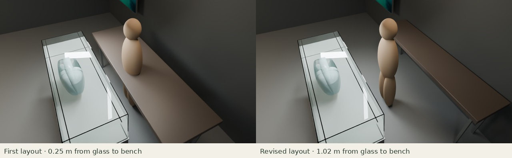
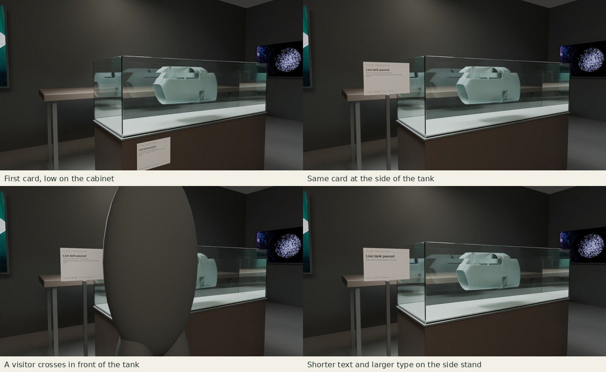
How far can this hull turn?
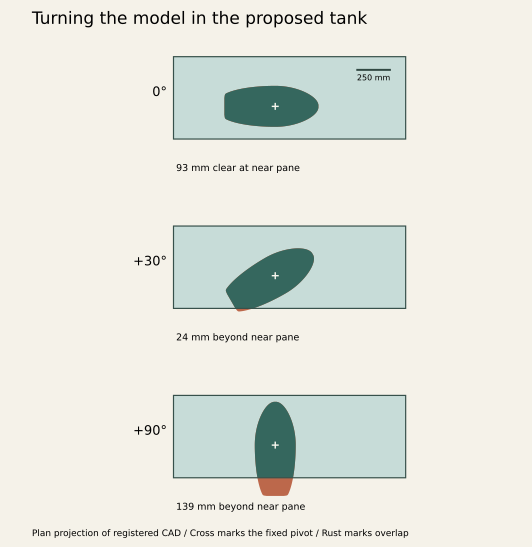
The joined shell measures 721 mm long. The model tank has 631 mm between the inner glass faces. A side-on display can show the opening from the bay. A free-turning demonstration with this future hull would need a different vessel or a different motion. The first filmed prototype has another hull. Measure the actual installed body, including its offspring and leads, before ordering a tank. Geometry and assumptions.
Before opening the room
Run a cycle with the lights up
Time retrieval, reloading, priming and release separately. Ask the operator where their hands and tools need to go. Keep this route behind the tank. Agree on who can suspend a cycle, who watches the public side during reset, and when breaks are covered.
See what disappears in the glass
Display a black frame, then the brightest population frame. Check both eye heights and photograph the release edge from the designated bay. Shift the display or flag the reflection if a rim disappears. Keep the aisle and level changes lit.
Listen before increasing the level
Try playback at the screen and on an independent stand beside the bay. At equal direct level at the seat, the nearer source gives about 6.5 dB more seat-to-door separation in a free-field calculation. Measure the room to find out how much survives reflections. Audition the pump alone at the tank and at the doorway. Then play the film alone, then both together. Mount playback separately from the tank structure. Caption the composed tones. Offer a full visit with the film muted and all interaction optional.
Leave a route through downtime
Test the recorded film on independent playback while the operator pauses the apparatus. The modelled water volume is about 492 litres before displacement. A smaller existing tank may be enough alongside the large film image. Confirm vessel size, floor loading, refill and drain routes with the venue before costing the installation. Log the longest completed reset before offering any live schedule to visitors.